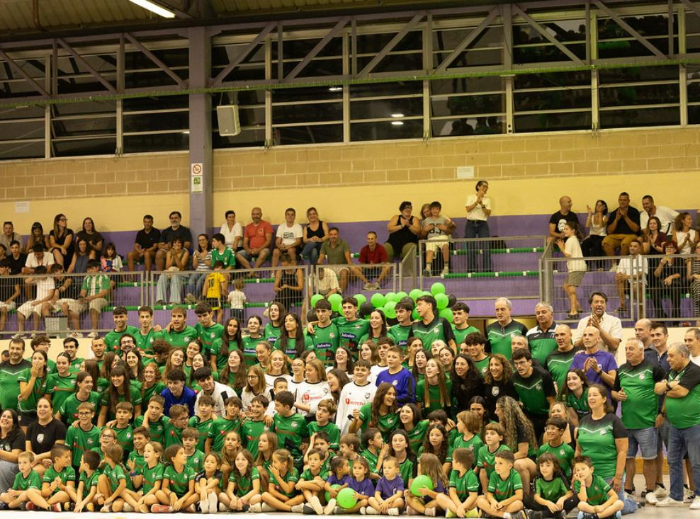
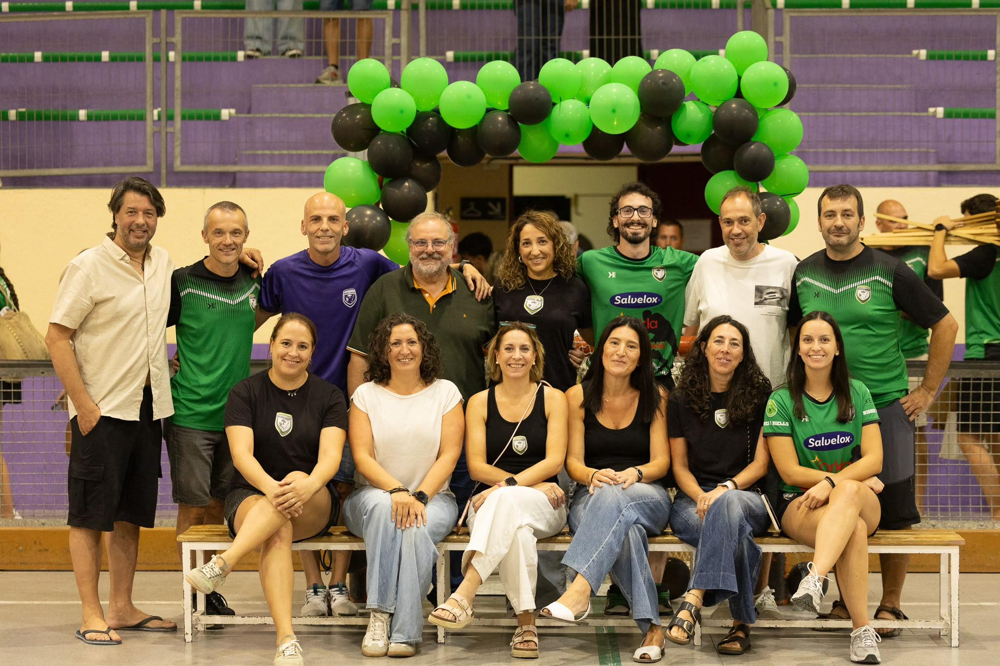

MÉS QUE UN ESCUT
EL
CLUB
Identitat, comunitat i passió per l'hoquei patins.
03 / IDENTITAT

BIGUES I RIELLS · HOQUEI PATINSBRDES DE 1991
LA NOSTRA
HISTÒRIA
El Club Hoquei Patí Bigues i Riells va néixer l’any 1991 amb l’objectiu de fer créixer l’hoquei patins al municipi.
Des d’aleshores, generacions de jugadors i jugadores, entrenadors i famílies han fet créixer un club on la formació, la passió per l’hoquei i el sentiment d’equip han estat sempre protagonistes.
Més de tres dècades d’història portant el nom de Bigues i Riells dins i fora de la pista.
RECORREGUT DEL CLUB
PALMARÈS
Títols
- Temporada 1999/00 — Campiones de Catalunya · Sènior femení
- Temporada 2000/01 — Campiones de Catalunya · Sènior femení
- Temporada 2000/01 — Campiones d’Espanya · Sènior femení
- Temporada 2003/04 — Campiones de 2a Catalana · Sènior femení
- Temporada 2009/10 — Campiones de Catalunya · Femení Base
- Temporada 2009/10 — Campiones d’Espanya · Femení Sub-16
- Temporada 2018/19 — Campions Copa Federació · Aleví
- Temporada 2023/24 — Campiones de la Lliga Nacional Catalana · Sènior femení
- Temporada 2026/27 — Campiones de la Lliga Catalana
Sotscampionats
- Temporada 2006/07 — Sotscampiones de 2a Catalana · Sènior femení
- Temporada 2009/10 — Sotscampiones de Catalunya · Femení Sub-16
- Temporada 2023/24 — Sotscampiones de Catalunya · FEM11
- Temporada 2023/24 — Sotscampiones Copa Generalitat · Nacional Catalana femenina
- Temporada 2024 — Sotscampiones Supercopa Catalana · Nacional Catalana femenina
Participacions i classificacions als Campionats de Catalunya
- Temporada 2024/25 — 4es de Catalunya · FEM13
- Temporada 2024/25 — Participació al Campionat de Catalunya · FEM15
- Temporada 2025/26 — Participació al Campionat de Catalunya · FEM15
- Temporada 2025/26 — Participació al Campionat de Catalunya · FEM17
- Temporada 2025/26 — Participació al Campionat de Catalunya · FEM19
MÉS QUE UN CLUB
CONEIX EL NOSTRE
CLUB
Més que un club, som una família unida per una mateixa passió: l’hoquei patins.
Descobreix el Club Hoquei Patí Bigues i Riells, la nostra història, els nostres equips i els valors que ens acompanyen cada vegada que sortim a pista.
Darrere de cada entrenament, cada partit i cada gol hi ha jugadors i jugadores, entrenadors, famílies i persones que fan possible que el club continuï creixent temporada rere temporada.
Dona-li al play i coneix-nos una mica més!

ORGANITZACIÓ
La Junta Directiva
La Junta Directiva del Club Hoquei Patí Bigues i Riells treballa dia a dia per fer créixer el club i continuar impulsant l’hoquei a Bigues i Riells.
Un equip de persones compromeses amb el club que, amb dedicació i il·lusió, treballa perquè jugadors i jugadores, equips tècnics i famílies se sentin part d’un projecte comú, tant dins com fora de la pista.
- Presidenta
- Laia Pastrana Guri
- Vicepresident
- Xiqui Carmona Martínez
- Secretària
- Maria del Mar Codina Molero
- Tresorera
- Marta Castell Barbany
- Vocals
- Marc Franch Castellarnau
- Carme Argemí Morral
- Oscar Saldaña Juvilla
- Neus Monserrat Pericas
- Jordi Humbert Farrarons
- Jaume Coll Artigues
- Natàlia Ylla Iglesias
- Silvia Tavera Bellido
- Esther Gomez Gonzalez
- Iu Oliana Castillo
- Álex Martín Bailon